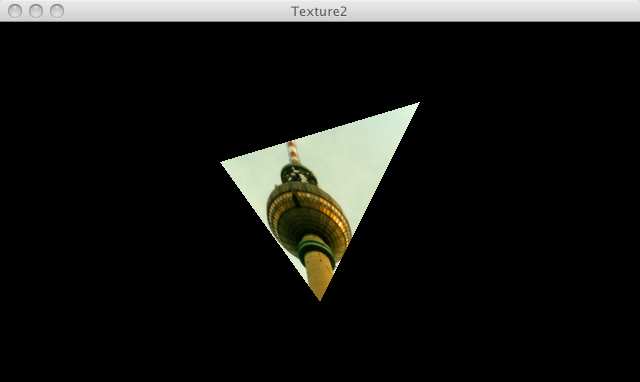

This page demonstrates PJS textures

// Demo by Andor Salga
/* @pjs preload="berlin.jpg" */
/**
* Texture 2.
*
* Using a rectangular image to map a texture onto a triangle.
*/
PImage img;
void setup() {
size(640, 360, P3D);
img = loadImage("berlin.jpg");
noStroke();
}
void draw() {
background(0);
translate(width / 2, height / 2, 0);
rotateY(map(mouseX, 0, width, -PI, PI));
beginShape();
texture(img);
vertex(-100, -100, 0, 0, 0);
vertex(100, -40, 0, 400, 120);
vertex(0, 100, 0, 200, 400);
endShape();
}